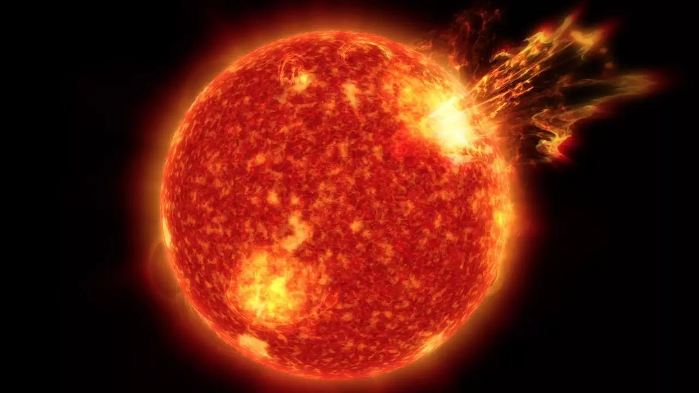
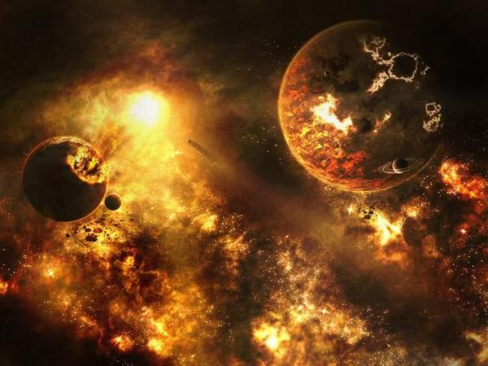

地球和太陽有多遠，
太陽爆炸多久能影響到地球？
01
太陽到地球的平均距離約1.5億公里，太陽如果發生什麼變故，最快是光速傳播，每秒約30萬公里， 傳到地球約500秒鐘，也就是8分20秒，所以按光速計算太陽到地球的距離一般稱為8光分。 所以太陽發生什麼事，地球上要在8分多鐘後才能觀測到。
02
太陽與地球的距離
太陽因為是一個黃矮星，在恆星中這種黃矮星是比較穩定的，壽命一般有100億年，最終的結局是變成一個紅巨星， 直徑增加200倍，中心坍縮成一個白矮星，外圍的氣體物質飄散在太空成為稀薄的星雲。所以發生大爆炸的可能性很小， 就是紅巨星也還有50億年的時光。 估計100億年以後，太陽可能會大爆炸。地球會在8分鐘以後失去陽光普照，在不到7天時間變成超冷的藍色星球。

03
太陽爆炸
如果太陽爆炸了，產生的衝擊波應該不會比太陽光來的快，也就是時間會長於8分18秒。如果太陽爆炸向外衝擊波的速度 達到太陽風的速度，也就是每秒500千米，那麼到達地球需要83.3個小時。如果是像地球上的核爆炸那樣，衝擊波會以 每秒50千米的速度擴散，那就需要833個小時才能到達地球，當然，如果太陽像核彈那樣爆炸，由於當量巨大，速度應 該會比太陽風更快。屆時超高溫輻射能把地球燒成灰燼，沒有任何生命可以倖存。 太陽時時刻刻都在爆炸，太陽內部不停的在進行核聚變反應，就是耀斑和日冕，激烈的時候太陽風會較為猛烈。這種太 陽風是太陽上層大氣射出的等離子帶電粒子流，會以每秒200-900公里的速度飛離太陽，擴散到太空中，當然也飛向地球。 這種帶點粒子雖然很稀薄，地球又有強大的磁場在抵禦，但還是有一些漏網之魚來到地球，給大氣層已經無限點通訊帶來 破壞和影響，甚至會引起氣候反常和火山爆發地震等災害。 太陽不會像炸彈一樣爆炸，晚期的太陽會變成一個紅巨星，然後回變成一顆白矮星，在太空孤獨的遊蕩。
 